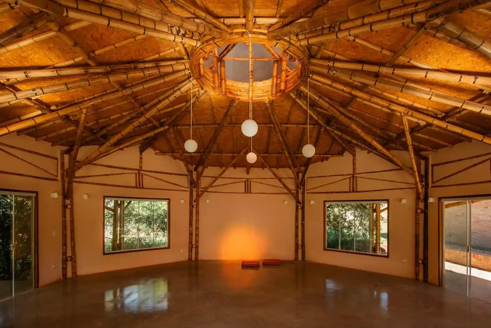
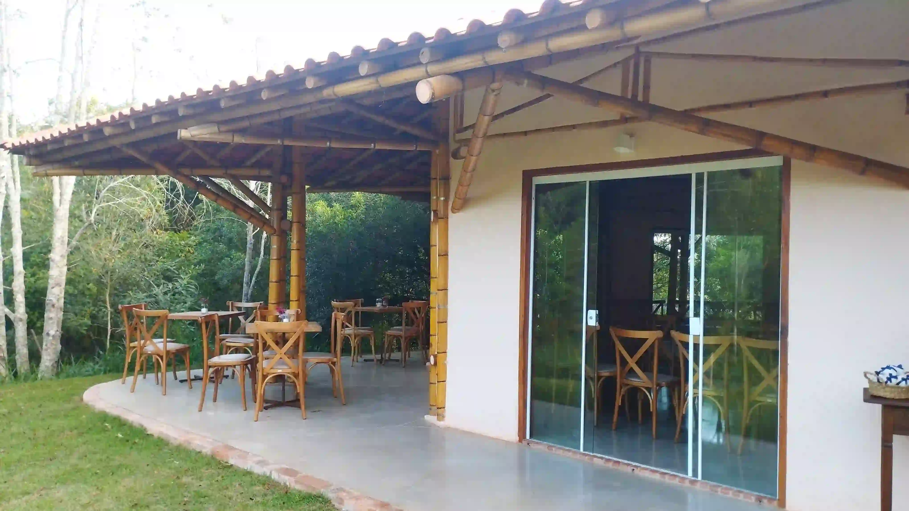
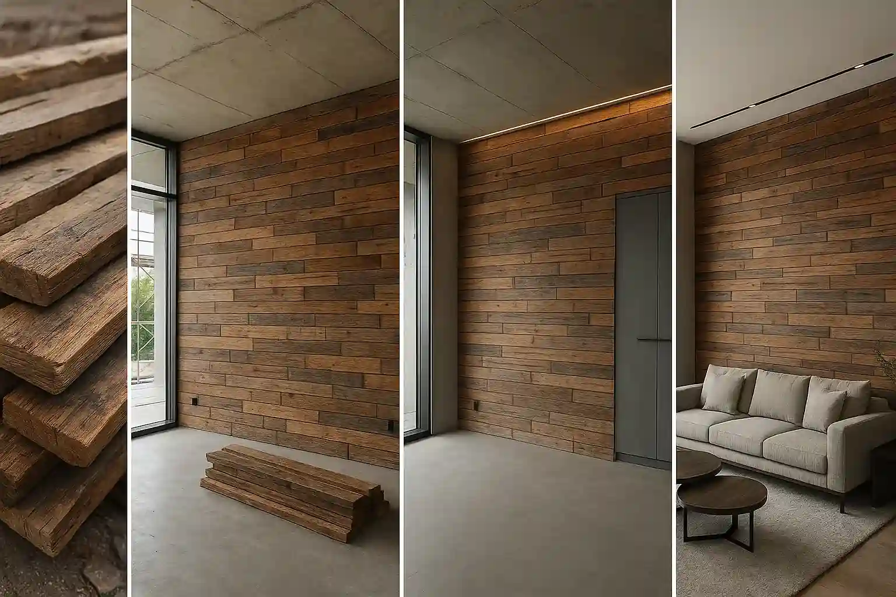
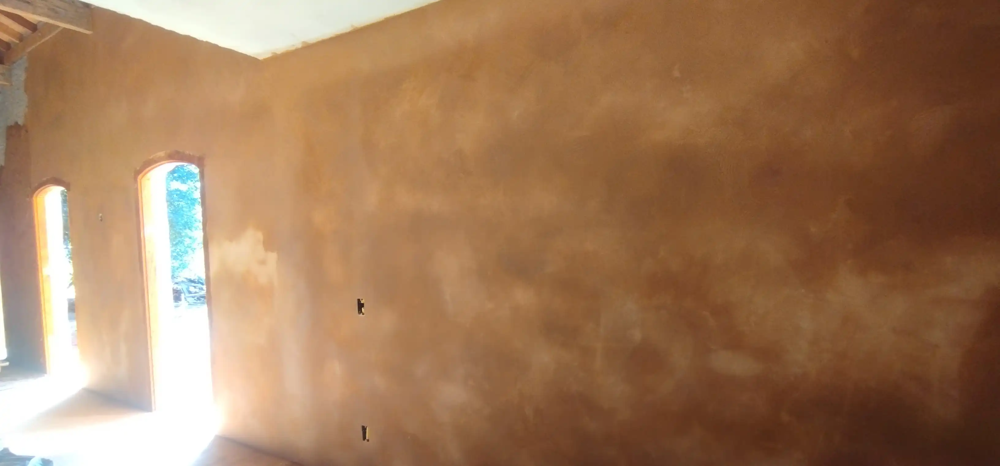
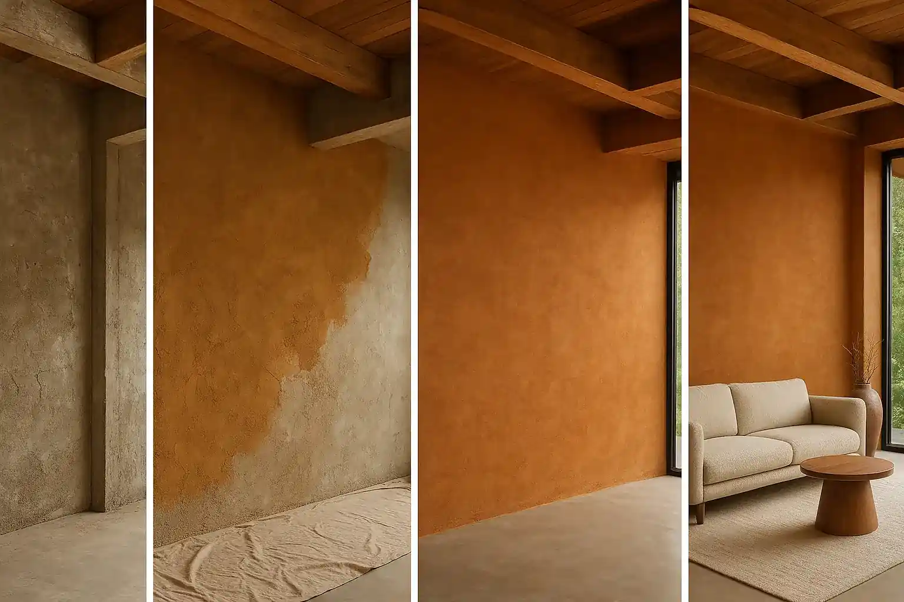
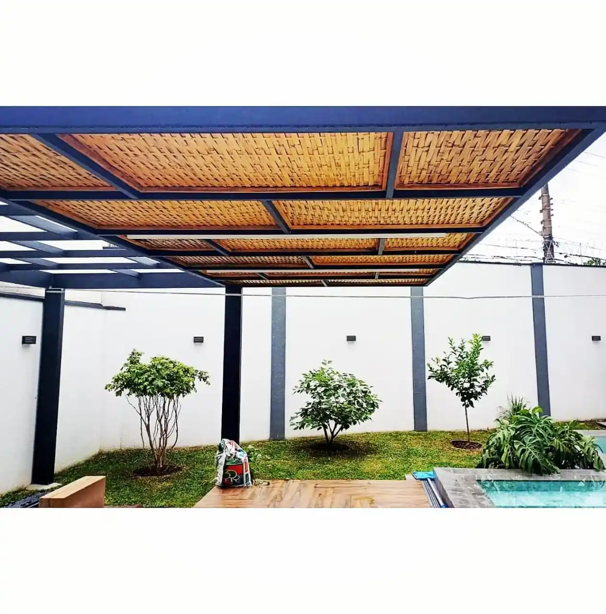

Seja uma casa aconchegante, um refúgio terapêutico ou um espaço comercial inovador, trazemos sua visão à vida com materiais naturais e design consciente.
FALE CONOSCOResgatamos a sabedoria construtiva ancestral e a integramos às inovações contemporâneas para criar edificações eficientes e de baixo impacto ambiental.
Crie espaços que promovem saúde, conforto térmico e uma conexão genuína com a natureza.
Um investimento inteligente em construções duráveis, ecológicas e com crescente apelo no mercado.
Seu projeto com identidade própria, valorizando a estética natural dos materiais.
Realize seu sonho de construir ou renovar com quem entende do assunto.

Estruturas versáteis, resistentes e de beleza incomparável – de residências a galpões rurais até espaços comerciais, gourmet e terapêuticos.

Tradição e eficiência para paredes com excelente conforto térmico e acústico.

Charme, história e sustentabilidade reutilizando materiais nobres.

Acabamentos que deixam sua casa respirar, utilizando argamassas à base de terra, cal e outros agregados naturais.

Cores e texturas autênticas da natureza para seus ambientes, sem componentes tóxicos.
3 modelos premium: roliço, filepa reta e entrelaçado. Ideal para forros, divisórias, muretas e cercados.
Ver portfólioOrientação completa para viabilizar sua obra, do planejamento à capacitação de mão de obra e execução.

Bioconstrução é uma abordagem construtiva que prioriza materiais naturais e técnicas sustentáveis para criar edificações saudáveis e em harmonia com o meio ambiente. Na Conexão Terra Bambu, combinamos sabedoria ancestral com inovações modernas para:
Estudos comprovam que ambientes naturais impactam diretamente nossa saúde física e mental. Nossas construções proporcionam:
Nossas construções são projetadas para durar gerações. Dados concretos mostram:
Manutenção simplificada: Apenas cuidados básicos anuais são necessários.
Ver Projetos AntigosO investimento inicial pode ser similar ou até 15% menor que construções convencionais, dependendo do projeto. Considere:
Atendemos diversos tipos de projetos em todo o interior de SP:
Tempo médio: 3-6 meses (projeto completo)
Solicitar OrçamentoNosso compromisso com a qualidade inclui: